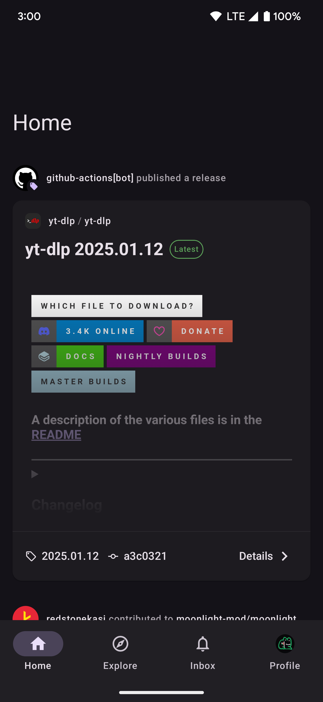
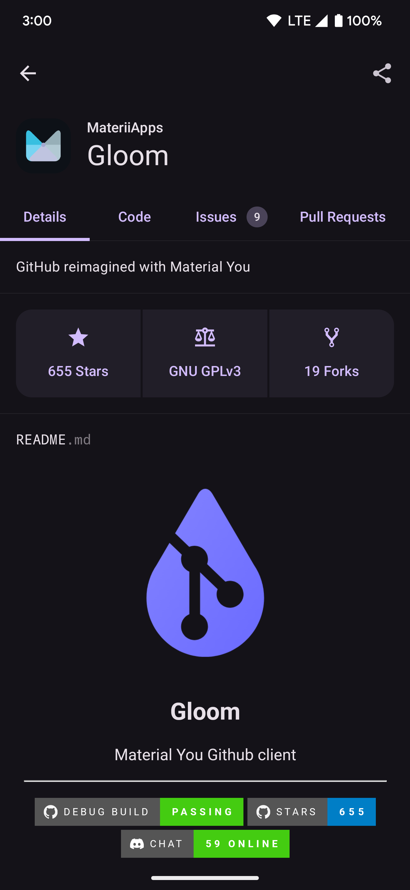

我装了 Gloom，终于在通勤路上能好好刷 GitHub 了
Gloom 是 MateriiApps 做的一款 Android GitHub 客户端，不走 Play Store、不靠中间服务器，直接从 GitHub API 拉数据。用了一周下来，聊聊它好在哪里、哪些地方还有点糙。
为什么我会装它
实话讲，手机上看 GitHub 这件事，我之前是放弃的。浏览器打开 github.com 体验烂得离谱，网页版在小屏幕上就是个缩放灾难；试过几个第三方客户端，要么界面像十年前的安卓，要么卡得要命。直到有人在 Indie Hacker 群里甩了一句——"Gloom 是我用过最干净的 GitHub 客户端"，顺带给了个它官网的链接让我自己去看。
我对"干净"这个词没什么概念，去官方下载拿了 APK 装完打开就懂了：它没有欢迎页、没有引导教程、没有要求你注册账号，第一屏就是 GitHub 登录。登完之后直接进首页信息流——Follow 的人在 Star 什么仓库、谁推了什么代码、哪家组织发了 Release，按时间线往下排。就这么素。

第一眼：界面和主题
Gloom 遵循 Android 13+ 的动态主题规则，深浅色完全跟随系统，不提供独立切换开关。我个人喜欢这个设计哲学——你手机设成深色，它就深色；系统自动按时间切，它也跟着切。没有"强制深色"或"强制浅色"的选项，想单独让它用另一种主题只能去系统设置里给应用级覆盖。
切换过渡大概 200-300ms 的颜色渐变，不跳色。代码高亮也跟着深浅色自动换配色，深色模式下是 GitHub Dark 那套，浅色模式下是 GitHub Light，色对比度过了无障碍标准。细节到位。
不过有一点我注意到：它不缓存。Gloom 直接通过 GitHub REST API 和 User Events API 拉数据，不走中间服务器、不做缓存中转。这意味着没网的时候打开 Gloom，就是一张白纸，什么都看不了。好消息是每次打开都是最新数据，坏消息是地铁过隧道那段时间彻底断片。
核心体验一：仓库浏览真的流畅
我在电脑上逛 GitHub 的节奏是"发现项目 → 点进去 → 翻 README → 看 Release → 扫一眼最近的 Commit"。Gloom 把这条链路在手机上做通了。
点进一个仓库页，README 渲染得干净，Markdown 表格、代码块、引用块都正常显示。代码高亮跟随深浅色切换，长代码可以横向滚动。Release Tab 和 Commit Log Tab 也都有，点进单个 Commit 能看到 diff，这些进阶功能的具体玩法可以去 Gloom文档 翻。Star 和 Fork 数、语言分布这些元数据也在顶部展示。

说实话，我没想到在手机上看代码能有这个体验。之前用浏览器进仓库，代码块横向滚动经常卡死，而且页面要加载半分钟。Gloom 加载 README 基本秒开，代码 diff 也不慢——前提是网络通畅。
核心体验二：Starred 列表救了我的记性
GitHub 上每天能刷到好项目太多了，全靠脑子记不住。我之前的做法是看到好项目就 Star，但 Star 完之后这辈子基本不会再去翻了——直到 Gloom 把 Starred 列表做了出来。
个人主页的 Starred Tab 里，所有 Star 过的仓库按时间倒序排列，每个条目显示仓库名、描述、主要语言（用彩色小点标识）、Star 数和 Fork 数，还有你 Star 它的相对时间——"2 天前 Star""上周 Star"。点进去就是仓库页。
现在通勤路上我最常做的事就是翻 Starred 列表，把那些"想详细看但当时没时间"的项目一个个点开。有个上周 Star 的 Rust 写的终端文件管理器，我就是在地铁上翻完 README 才决定在电脑上试的。
不过有个遗憾：Starred 列表没有内置搜索框。我 Star 了大概一百多个仓库，想找某个特定项目时，只能手动往下翻。Gloom 说 GitHub API 支持按 Star 数、语言、更新时间排序但暂未实现。希望后续版本能加上。
最头疼的问题：GitHub 访问受限
用了大概三天的时候，Gloom 开始卡住了——登录失败、仓库页面一直转圈、首页信息流加载不出来。重启应用没用，重登账号没用。最后排查了一圈，发现是我公司 Wi-Fi 屏蔽了 GitHub 的访问。
Gloom 的所有数据都直接从 GitHub API 拉，不经过任何中间层。这意味着它的网络架构是"裸奔"的——代理/VPN 需要同时代理 api.github.com（这是 Gloom 实际访问的 API 端点），只给浏览器开代理没用。GitHub API 还有速率限制，认证态每小时 5000 次，用多了同样会被限流。
解决方案就那么几个：换网络（手机开飞行切卡）、确认代理配置正确、手动设 DNS。长期来看，如果所在网络环境长期无法直接访问 GitHub，Gloom 的使用体验会打折扣——毕竟它定位就是"碎片时间阅读器"，主力还是在电脑端 GitHub 网页版。
适合谁、不适合谁
适合在 GitHub 上有活跃账户的开发者或技术爱好者：Follow 了不少人、Star 了不少仓库，想在通勤等碎片时间快速刷动态和翻项目。Gloom 干净、流畅、不花哨，正好对应这个场景。
如果你 Star 列表是空的、GitHub 账户只是偶尔登录下载个 Release，Gloom 可能显得有点重。还有如果你所在的网络环境长期无法直接访问 GitHub，就得额外折腾代理/VPN，这个成本需要自己掂量。
小结
Gloom 不是一个"GitHub 的替代品"，它更像一个"GitHub 的移动端快速入口"——帮你在碎片时间里不费力地保持和社区的连接。它的优势是干净、快、原生 Material Design，缺点是不缓存、对网络环境敏感、部分排序和搜索功能还没补齐。对于通勤路上想刷几眼 GitHub 的我来说，够用了。哦对了，关于 Gloom 这套资料我同时放了三个版本，分别在 GitHub、Gitee 和 GitCode，国内网络不好的时候直接转 Gitee 那份就行。